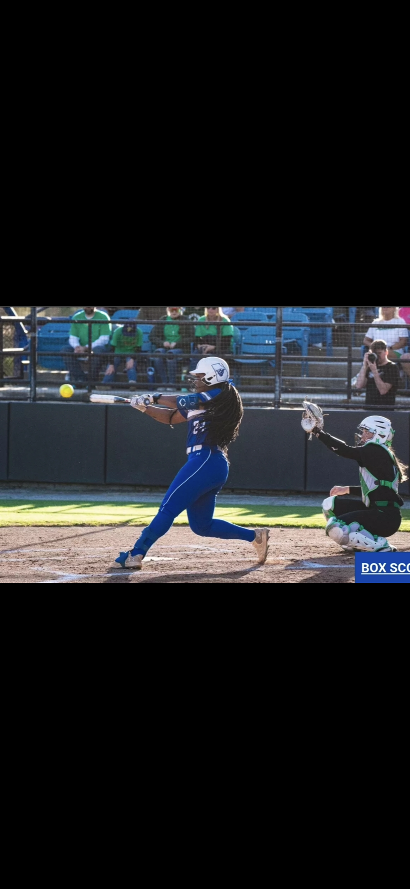
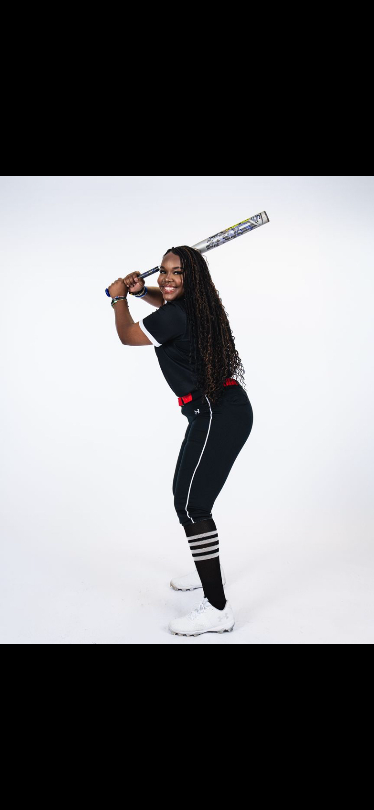

Gallery



I’m a Sports Administration major at Georgia State University and a Division 1 softball athlete. Being in this environment every day has shown me how much goes into sports beyond just playing. From leadership and teamwork to the business and organization behind athletics, it’s given me a new perspective and made me passionate about working in sports long term.
This essay focuses on maintaining a positive mindset while balancing life as a student-athlete. It reflects on staying mentally strong, managing pressure, and pushing through challenges both on and off the field.
My Role: I wrote this essay based on my personal experiences.
What I Learned: I learned how important mindset is in everything I do. Staying positive and being able to pull myself out of negative thoughts is key to staying focused and reaching my goals.
View AssignmentThis project highlights the importance of professional appearance in different settings, especially within careers related to sports and business. It shows how dressing appropriately can impact how you are perceived.
My Role: I created the PowerPoint and selected outfit ideas that fit different professional situations.
What I Learned: I learned how to properly dress for different events, especially ones I may attend in my future career in sports administration.
View AssignmentThis presentation focuses on how gender role stereotypes are a major issue in society and explores ways we can work toward creating change.
My Role: I created the PowerPoint presentation and organized the ideas.
What I Learned: I learned how common gender stereotypes still are and how important it is to speak on issues that can impact people’s opportunities and experiences.
View Assignment

Email: morgjwill@gmail.com
Phone: 404-910-7393